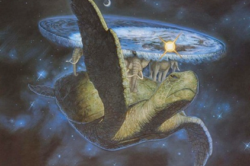

Notas
Table of Contents
- Notas
- Por qué me gusta la ciencia ficción
- Los propios dioses
- Dios como destino evolutivo
- Winston Churchill
- Horarios nocturnos
- Navegantes
- La ignorancia
- Francés
- Naturalismo en el pensamiento chino
- Pint Of Science 2016
- Cerveza artesana
- Países donde he estado
- I³ - Creatividad
- Ser un líder (I)
- El poder de la innovación (II): experimentos con Systematic Inventive Thinking
- El poder de la innovación (I)
- Liderazgo militar (I)
- El buen diseño
- Creo que mi cerebro está muerto
- El latir de la Sociedad Global en directo, a través de Wikipedia
- El retorno del geocentrismo
- Atmorphophallus titanum
- De cursos y post-its

Notas
Este blog es la fusión de dos blogs que mantenía en el pasado, La sana curiosidad y Primum vivere, acerca de innovación y liderazgo el primero, y un batiburrillo de otras cosas el segundo. Pero de alguna manera sentía que no tenía sentido mantener dos blogs, aunque fuesen de temáticas distintas. Así que los he fusionado. Espero que, entre otras cosas, me sirva para escribir un poco más a menudo.
Por qué me gusta la ciencia ficción
Hace poco una amiga me preguntó si leía mucha ciencia ficción. La pregunta siguiente a ésta, formulada de manera explícita o intencionadamente silenciada pero visible a través de una mirada o un gesto apenas perceptible (como en esta última ocasión) suele ser por qué. Y dado que esta pregunta me la han realizado ya un gran número de personas, creo que es hora de dar una respuesta adecuada y medianamente clara en su formulación y razonamiento. Lo cual, dicho sea de paso, exigirá de una dura reflexión interna.
Antes de nada, debería decir que no sólo leo ciencia ficción. aunque es cierto que en los últimos tiempos esta temática ha cubierto la mayoría de los libros que han pasado por mis manos, ojos y cerebro.
De pequeño leí muchos libros de venturas. Nada del otro mundo, lo normal en un chaval inquieto que disfruta con la lectura. En cierto momento comencé a leer ensayos, sobre todo de carácter científico y técnico. Recuerdo que mi hermano, estimulado quizá por mi padre, comenzó a coleccionar una serie de libros, todos ellos de naturaleza técnica. La colección se titulaba "Biblioteca de Divulgación Científica Muy Interesante". La mayoría de los volúmenes tenían cierto contenido científico, antropológico, y algunos incluso filosófico. Hay muy pocos de estos libros que no recuerde con gusto en referencia a lo que disfruté leyéndolos. Posteriormente comencé a leer más y más libros de fantasía y ciencia ficción, a la vez que leía otros con contenido más orientado a la divulgación, en particular a la astronomía y a la astrofísica. He de decir, quizá ya lo sepa el lector, que soy astrofísico de formación, aunque la inmensa mayoría de mi vida laboral la haya invertido en labores relacionadas con la gestión de proyectos y sobre todo con la ingeniería de software.
Fue sin duda a partir del momento en que comencé a leer más y más novelas de ciencia ficción que quedé enamorado. Pero debo hacer una aclaración, que quizá resulte superflua para otros amantes del género. Ciencia ficción no significa exclusivamente, ni mucho menos, navecitas o viajes por el espacio. Ni siquiera vivir en otros planetas, o luchar con especies alienígenas. Aunque también hay mucho de ello, malo y bueno, como en todo.
Pero no. Me refiero a que la ciencia ficción, su historia, su hilo narrativo, puede transcurrir en una sociedad muy parecida a la nuestra. Y en ocasiones indistinguible de ella.
No vaya el lector a pensar que aquellos escenarios espaciales me disgustan, o que los hago de menos en alguna medida. Muy al contrario, son mis favoritos. La astrofísica es una disciplina altamente vocacional, y eso debe dar una pista sobre cuáles son mis preferencias. Naves y cruceros estelares, surcando la inmensidad del cosmos, con la mayoría de sus pasajeros en estasis debido a las enormes distancias y tiempos necesarios para alcanzar su destino. Con la excepción de unos pocos pasajeros, artificialmente evolucionados y modificados para soportar física y psicológicamente esas condiciones.
Y sin embargo, como digo, la ciencia ficción no es solamente eso. Por ejemplo, la historia puede tratar de un futuro distópico en el que las sociedades de todo el mundo han entrado en una fractura crítica, bien por la escasez de cualquier tipo de recursos (agua, alimentos, energía, …), bien a causa de una terrible guerra fratricida, bien por la imposición de un sistema de gobierno intrínsecamente autodestructivo. O podemos tener un historia en la que la Humanidad se ha visto escindida en dos o más grupos, regidos por sistemas de gobierno antagónicos, cada uno con sus pros y sus contras. O bien, en efecto, una historia en la que todo transcurre con normalidad para la inmensa mayoría de las personas, salvo para un protagonista o un selecto grupo de actores, que participan en mayor o menor medida de una cadena de acontecimientos que transcurren paralelos al devenir del mundo, ya sea visto desde dentro, o desde fuera, como una suerte de semidioses que resultan espectadores, o incluso experimentadores, ante esa realidad, o que viven en una realidad que trasciende a la que el resto de mortales perciben como real.
Me vienen a la cabeza, mientras escribo esto, títulos que tal vez el lector conozca, como Los desposeídos, de Ursula K. Le Guin; o Informe en minoría de Philip K. Dick, que inspiró la película Minority Report de Steven Spielberg; o ¿Sueñan los androides con ovejas eléctricas?, del mismo autor e inspiradora de la gran película de Ridley Scott Blade Runner; o incluso La máquina del tiempo, obra de H. G. Wells. También algunos títulos de películas que se han hecho más conocidos que las obras literarias de las que tomaban la idea, como Soylent Green, dirigida por Richard Fleischer e inspirada en la novela de Harry Harrison Make Room! Make Room!. En todos estos casos la ciencia ficción no tiene que recurrir a naves espaciales o viajes interestelares para producir su efecto cautivador (en la novela de Ursula K. Le Guin sí aparecen naves espaciales, pero de manera casi anecdótica para el desarrollo de la historia).
Y sin embargo, todas las historia de ciencia ficción, sin excepciones, comparten una serie de características y lugares comunes que son los que a mí me atraen, y que trataré de exponer a continuación.
En primer lugar, se trata de mundos, sociedades, países, planetas o civilizaciones ajenas en todo o en parte a lo que estamos acostumbrados a vivir cada día. He dicho antes que a veces la sociedad de la que se habla puede ser idéntica a la nuestra, lo cual invita a pensar que ahora me estoy contradiciendo. En realidad no hay tal contradicción: incluso en esos casos, el hecho diferenciador, lo que hace que la historia sea un relato de ciencia ficción, puede ser tan extraordinario que todo el universo narrativo que se crea se tiña de una pátina de vida ajena a la nuestra. Ésto me atrae, porque para mí la literatura ha de permitir al lector evadirse de su realidad. Dicho muy brevemente, algo que siempre busco en el relato es que me entretenga, y que me sirva de vía de escape frente a la a veces tediosa realidad. Si la realidad tiene sus miserias, sus banalidades, o su machacona rutina, quiero que el relato de ciencia ficción sea algo más que una constatación de todo lo que ya es, y a poder ser que utilice todo esto para sorprenderme, para hacer que sienta curiosidad por esa otra vida creada.
No es ésta sin embargo la razón fundamental por la que me gusta la ciencia ficción. Lo que caracteriza a mi juicio todos los relatos de ciencia ficción es la exploración del comportamiento humano, y por extensión del comportamiento de la sociedad, ante situaciones límite. Situaciones que de otra manera, sin la ayuda de avances tecnológicos y/o científicos, nos sería muy difícil de abordar. Mediante diversos mecanismos, el uso de nuevos dispositivos, técnicas y tecnologías inventadas, o del uso de artilugios y elementos ya existentes pero extrapolados hasta más allá de sus cometidos y posibilidades, el autor de ciencia ficción enfrenta a la Humanidad a lo desconocido. Esto provoca sin duda una reacción, la aparición de retos, de oportunidades y de crisis identitarias en los personajes y en las sociedades introducidas, más allá de cualquier escenario conocido o planteado previamente. Y queda a la habilidad del autor, y a la imaginación del lector, saber resolver estas cuestiones. La ciencia ficción pone al ser humano cara a cara con sus monstruos, algunos de los cuales no podrían aparecer en las páginas de un libro sin esos elementos de ciencia o tecnología.
Para mí aquí radica la grandiosidad de la ciencia ficción. La ficción literaria en general puede inventar relatos ficticios, elaborar narrativas con personajes inventados o con hechos que nunca acaecieron. Pero la ciencia ficción es capaz de llevar al límite, al mismo borde del abismo, a la Humanidad en su conjunto. ¿No es ese un buen motivo para leer libros de ciencia ficción?
Los propios dioses
Estoy leyendo la novela de Isaac Asimov "Los propios dioses". Es una novela de momento muy interesante, que casi me da vergüenza confesar que no conocía. En una parte de la misma se intenta dar una visión de una civilización alienígena y sus costumbres sociales, así como su biología, morfología y demás características. Decir alienígena es quedarse un poco corto, porque en realidad estos seres viven en un universo paralelo al nuestro. La descripción que hace el autor y sus esfuerzos por transmitirnos toda una serie de comportamientos, sentimientos, vivencias de estos seres me parecen simplemente grandiosos. Sobre todo teniendo en cuenta la distancia en términos cósmicos que su naturaleza y la nuestra mantienen.
Pero, claro, es Isaac Asimov.
Dios como destino evolutivo
Hay una reflexión muy interesante de Ray Kurzweil acerca de Dios. Dice que aparte de todas las características divinas de índole religiosa, y con independencia de éstas, el concepto de Dios en diferentes culturas, de manera transversal, se asocia siempre con un ente o entidad ilimitada en diversos aspectos: belleza, inteligencia, conocimiento, etc.
Ahora bien, continua el razonamiento, ¿qué ocurre con la evolución del ser humano en esas sociedades? Hablamos de cualquier tipo de evolución: cultural, tecnológica, biológica, … Lo que ocurre con los seres humanos es que aprenden más, adquieren más conocimientos, aumentan su esperanza de vida, son más inteligentes, … De modo que la evolución, en realidad podría ser vista como un acercamiento asintótico, sin llegar a alcanzarlo nunca, a ese ideal de Dios. Un acercamiento exponencial a la esencia divina de la Humanidad.
Este argumento me parece no sólo muy interesante, sino francamente acertado, y en cierto modo motivador.
Winston Churchill
Hace unos días leí en Nature un artículo en el que se hablaba de que Winston Churchill había escrito un artículo muchos años antes de su muerte en el que trataba varios temas de índole científica. En partículas hablaba y reflexionaba Churchill acerca de la posibilidad de que existiese vida en otros lugares de nuestro Universo. El político parece ser que era un verdadero apasionado de los avances científicos y técnicos. De hecho, según menciona el artículo, fue el primer político (entiendo que de occidente) que tuvo un consejero científico.
Un gran tipo, este Churchill.
Horarios nocturnos
Me despierto un gran número de noches a determinadas horas muy características. Quiero decir que me despierto, aún con los ojos cerrados me pongo boca arriba en la cama, abro los ojos, miro a la hora proyectada por nuestro reloj despertador en el techo, y la hora que ve es una hora peculiar. Por hora peculiar quiero decir, por ejemplo, las tres y treinta y tres, las cuatro y cuaterta y cuatro, etc. O quizá esa noche me despierto primero a la una y veintitrés, después más tarde a las dos y treinta y cuatro, y así.
Hoy, sin ir más lejos, me he despertado por primera vez a la una y veintitrés, y la segunda vez me he levantado sin mirar la hora, y a la vuelta me he acostado boca arriba y he pensado, aún sin mirar al techo: "Seguro que son las cuatro y cincuenta y seis". Y en efecto, era esa hora. No es que esté en la cama esperando a que llegue esa hora, no. Esas son las horas que veo nada más abrir los ojos y mirar hacia arriba.
La hora más habitual, en todo caso y de lejos, es las tres y treinta y tres. Una vez busqué si le pasaba algo parecido a más gente, pero comencé a encontrar páginas en Internet acerca de espíritus, demonios, y otras mandangas similares.
Estoy seguro de que existe una explicación perfectamente racional y comprensible para estos hechos. Pero aún la desconozco. Y estoy realmente intrigado.
Navegantes
Leo en "Los propios dioses", una de las mejores novelas de ciencia ficción de Isaac Asimov, que tras la instauración de colonias en la Luna algunas muertes se produjeron al intentar establecerse en la Tierra gente nacida en la luna, selenitas de nacimiento. Es claro que esto jamás ocurriría en la realidad, ya que todo estaría previsto de antemano, y los estudios mostrarían los problemas óseos de los selenitas. Por tanto, lo tomo como una licencia literaria del autor, que intentaría probablemente añadir cierto dramatismo a la segregación de la Humanidad en varios planetas.
Y sin embargo, considero muy cierto que aún estamos, y supongo que estaremos durante mucho tiempo, limitados por nuestro propio organismo, por nuestro propio ser biológico. Y no sólo a nivel físico. Es muy probable que no estemos preparados psicológicamente para viajes interestelares, sin la luz del Sol, o para vivir en una planeta extraño sin la presencia nocturna de nuestra Luna.
No obstante, veo inevitable que el ser humano acabe explorando otros mundos. Es posible que solamente una clase de personas sea capaz, al principio, de ser los pioneros en este capítulo de nuestra historia, del mismo modo que no todo el mundo estaba preparado siglos atrás para navegar durante meses o años por los océanos. Un día llegará en el que sea normal para nosotros navegar entre las estrellas.
La ignorancia
En el día a día de las personas se difumina completamente toda la gloria de la existencia humana. No tenemos presente la vastedad del espacio, ni la inmensidad del tiempo, en este Universo nuestro.
Quizá el ser humano haya crecido con esta capacidad de manera intrínseca; es decir, quizá el ser humano no sea capaz de vivir un día a día con ese conocimiento consciente. Quizá tener presente todos esas cosas haga que el ser humano se plantee demasiadas preguntas sin respuesta, que le hagan la vida demasiado difícil de soportar.
En este sentido, la ignorancia podría ser un mecanismo de supervivencia de la especie.
Francés
Me he apuntado a clases de francés. La verdad es que llevo desde el pasado noviembre. Y se me da fatal.
En el lugar donde trabajo hay una gran cantidad de clubes sociales, a los que se puede apuntar la gente para realizar diferentes actividades. Hay club de running, club de robótica, club de vela, club de golf, de tenis, padel, fútbol… Lo bueno de estos clubes es que la ESA los subvenciona, de manera que el pago que hay que realizar por una cierta actividad siempre es menor al coste que tendría de realizarla fuera del trabajo.
A mí la verdad es que lo que me interesaba era el japonés. Pero no había suficiente gente para formar un grupo de japonés nivel principiante. Me apunté al curso de chino, nivel intermedio, y la verdad es que era estupendo. Pero al ser intermedio, y tener que ponerme al nivel de los demás alumnos, la cantidad de cosas, sobre todo vocabulario, que tenía que aprender era demasiado. Al final abandoné, ya que me causaba demasiada frustración no poder dedicarle el tiempo necesario.
Ahora me he apuntado a francés, y además estamos en el nivel básico, desde el principio. Pero lo cierto es que no me gusta. Nunca me ha gustado. Quizá por eso se me da bastante mal.
Pero voy a darle una oportunidad, porque de momento no me resulta demasiado exigente. El tiempo dirá adonde llegamos con esto. Ya os comentaré.
Naturalismo en el pensamiento chino
Ayer me llegó un e-mail de una de esas plataformas de cursos online. Últimamente no les hago demasiado caso a estos e-mails, ya que ando más que liado con la casa nueva, la novela nueva, el trabajo nuevo… Pero en el e-mail de ayer vi un curso que me intrigó: Humanity and Nature in Chinese Thought, por la Hong-Kong University. Así que comencé a echarle un vistazo.
El curso dura 8 semanas, y trata esencialmente de dar un repaso al Naturalismo que impregna la filosofía del pensamiento chino, en contraposición al Supernaturalismo del pensamiento occidental. El profesor, en la presentación del curso, sabe como atraer alumnos:
We are going to be presenting a course to you on Chinese Philosophy that focuses on the concept of ‘dao’. This is a concept that we kind of like to think of as the inspiration for the Star Wars idea of the guide that Luke focuses on when he goes to target Darth Vader’s Death Star. Use the force Luke, so follow the ‘dao’ and it will take you to your target. Han Solo treats all of this talk about the force as an ancient, old, weird religion but we’ll see that it’s not really religious but it lies on the boundary between religion and philosophy. It’s a natural scheme of nature’s guidance. Guidance that does not depend on a supernatural force but that we just discover in nature. The practical impact of knowing ‘dao’ is knowing how to do things; knowing how to follow nature’s guiding paths.
Sí, me he apuntado al curso. Ya veremos si lo concluyo, aunque las dos primeras lecciones han sido muy interesantes. Y además, es gratuito.
Pint Of Science 2016
Este año entré en contacto con un grupo de personas que desarrolla en España el festival Pint Of Science, que lleva unos años celebrándose en varios paises. …
(ver más…)
Cerveza artesana
El año pasado me regalaron un kit para hacer cerveza de manera artesanal. Lo cierto es que me hizo mucha ilusión, ya que si bien no soy un gran bebedor de cerveza, si es cierto que me gusta; pero sobre todo, me llamaba la atención conocer la manera en que se producía la cerveza (igual que casi cualquier otra cosa). Mi curiosidad, de nuevo.
El kit se componía de dos cajas. En una venían las botellas vacías, una docena, donde habría de embotellarse la cerveza una vez producida. Venían acompañadas de unos tapones de esos de aire retro que se sujetan al cuello de la botella por unos gruesos alambres y que consisten en un tapón cerámico con un aro de goma rojo. Valga decir, para aquellos que tengan ya cierta edad, que era como los tapones de la gaseosa de hace 40 años.
En la otra caja venía el kit de producción propiamente dicho. Para el tipo de cerveza que se produciría con este kit (Irish Stout) los ingredientes eran una bolsa de maltas tostadas, un par de sobre de lúpulos, al vacío, y un sobrecito de levadura. Venían estos componentes acompañados por un botellón enorme, estilo matraz, donde se produciría la fermentación, y una serie de elementos adicionales, como un tapón multicomponente, una goma, un tubo, y otras cosas más pequeñas.
El problema era que nunca encontraba el momento para hacerlo. Y así, ocurrió que los consumibles me caducaron antes de realizar el ejercicio de la producción cervecera. Mal por mí.
Afortunadamente, hace un par de meses me dijo mi amigo Fernando que le habían regalado un kit similar. Así que nos apañamos para quedar en su casa ha intentar la producción de nuestros galones de cerveza.
Esto ocurrió hace dos semanas. Durante estos últimos quince días, la cerveza ha estado fermentando en su matraz, y los restos de malta se han ido sedimentando. Hasta ayer, día en que trasvasamos la cerveza, eliminando los posos, añadiéndoles un punto de miel para que la fermentación se acelerase y se generase más gas, y procediendo a su embotellado.
Como fin de fiesta, mi amigo había hecho unas pegatinas para que pudiesemos hacer lo que el denominó "intercambio de banderines". En la imagen puede verse el resultado final. En dos semanas, probaremos el resultado, y actualizaremos este post.
Países donde he estado
Países donde he estado
Algo que ya conocía: una página web donde puedes marcar los países en los que uno ha estado, y que dibuja un mapamundi coloreando esos países. Cortesía de BigHugeLabs.com.
Realmente he estado en pocos lugares del mundo. Quizá haya que comenzar a plantearnos hacer un viajecito al extranjero de vez en cuando…
I³ - Creatividad
Publicado: 20 marzo 2014, 06:09 - Categorías: Creatividad - Comentarios: 2 …
(ver más…)
Ser un líder (I)
Publicado 10 mayo 2013, 07:30 …
(ver más…)
El poder de la innovación (II): experimentos con Systematic Inventive Thinking
Publicado: 22 octubre 2013, 22:07 - Comentarios: 1 …
(ver más…)
El poder de la innovación (I)
Publicado: 14 octubre 2013, 22:50 …
(ver más…)
Liderazgo militar (I)
Publicado 1 agosto 2013, 10:17 …
(ver más…)
El buen diseño
Publicado 1 agosto 2013, 23:19 …
(ver más…)
Creo que mi cerebro está muerto

Hace poco he leído algo acerca de lo que se denomina el síndrome de Cotard: la impresión absolutamente irracional de que el cerebro propio está muerto. Este mal, que parece estar relacionado con terribles formas de depresión profunda, resulta ser en la actualidad extraordinariamente raro en su profusión.
El artículo que leí relataba el caso de una persona a la que se había entrevistado, y que había sufrido esta enfermedad. Su testimonio es terrible: “No tenía sentido tomarse las cápsulas que el hospital me suministraba, dado no iban a hacerme ningún bien, puesto que mi cerebro estaba muerto. Perdí el sentido del olfato y del gusto. No necesitaba comer, ni hablar, ni hacer ninguna otra cosa. Acabé por pasar el tiempo en los cementerios, ya que era el lugar donde podía encontrarme más cerca de la muerte.”
Este caso, que los médicos han calificado de extraordinario, continúa siendo un enigma. Por ejemplo, las piernas del paciente, un hombre, estaban anteriormente llenas de pelo, pero éste desapareció al caer el paciente enfermo. Otra cosa que detectaron los médicos, y que podría estar directamente relacionado con la aparición del síndrome de Cotard, es el bajísimo nivel metabólico encontrado en pruebas PET (positron emission tomography) relizadas en los lóbulos frontal y parietal del cerebro, en areas relacionadas con el “Yo” y el pensamiento sobre uno mismo. Los niveles metabólicos encontrados eran compatibles con una persona en estado vegetativo.
Los que sufren esta enfermedad suelen morir de inanición, dado que piensan que no necesitan comer, respirar, etc. El sujeto del artículo en cuestión fue bien cuidado por familiares y amigos, y mediante medicamentos ha conseguido una gran autonomía en su vida. Y ya no cree que su cerebro ni ninguna otra parte de su ser está muerto. Aunque aún se siente algo extraño.
(Ver artículo en New Scientist, Mindscapes: First interview with a dead man).
El latir de la Sociedad Global en directo, a través de Wikipedia

Hoy me he encontrado con algo que me ha parecido terrible y bello a la vez: una visualización de las ediciones que se van realizando en las páginas de la Wikipedia, en todo el mundo, prácticamente en vivo y en directo. La página, llamada Hatnote Wikipedia Recent Changes Map, va mostrando, a intervalos de segundos, la localización aproximada de las personas que en esos momentos han editado una página de la Wikipedia (y, ya de paso, te dice qué página han modificado).
A mí me ha parecido, sinceramente, una visión de la Sociedad Global en su estado puro.
El retorno del geocentrismo

Leo en el ABC que “un profesor de la Universidad del País Vasco y un doctor por la de Murcia aseguran en un libro que nuestro planeta no se mueve y que es el Sol el que gira a su alrededor” (ver en este enlace). Estos dos caballeros afirman que la Tierra es el centro del Universo.
Según la noticia, “el físico Juan Carlos Gorostizaga, profesor de matemáticas aplicadas en la Escuela Técnica Superior de Náutica y Máquinas Navales de la Universidad del País Vasco (UPV), y Milenko Bernadic, doctor en Matemáticas por la Universidad de Murcia y actualmente profesor de Secundaria, han escrito un libro llamado «Sin embargo no se mueve», en el que desechan cientos de años de acumulación de conocimientos astronómicos y científicos y afirman, sencillamente, que la Tierra es el centro del Universo”. Según los autores del libro, el libro está indicado especialmente para “católicos con buena formación en ciencias”.
Solamente se me ocurre decir que podía ser peor: podían afirmar que la Tierra es plana (como, por cierto, asegura aún un porcentaje significativo de la población de Estados Unidos). O peor todavía, que en realidad la Tierra es una esfera hueca y vivimos en su superficie interior.
En fin, vaya tela…
Atmorphophallus titanum
El aro gigante, o bunga bangkai, que en indonesio quiere decir “flor cadaver”, es la flor más grande y apestosa del mundo. Debe su nombre indonesio a su característico aroma a carne putrefacta. Su nombre científico, Amorphophallus titanum, quiere decir literalmente “falo gigante deforme”. Dicho nombre viene de su forma alargada.
Esta curiosa flor es siempre noticia. Mejor dicho, es noticia siempre que florece, ya que puede tardar hasta quince años en florecer; la flor, de hasta tres metros de altura, en cambio, durará solamente unos pocos días.
Claro, que con su fétido olor no apetece estar mucho tiempo contemplándola de cerca.
De cursos y post-its

Hace poco he tenido que impartir de nuevo un curso cuya convocatoria suele ser más o menos anual. Se trata de un curso eminentemente técnico, y que pretende ser todo lo práctico que sea posible. Es un curso avanzado de C, el lenguaje de programación, en el cual, además, hago hincapié en programación concurrente, comunicación entre procesos, y cosas de este pelaje. Pero estoy divagando…
El caso es que tradicionalmente, tras el curso, se pasaba a los alumnos un formulario que debían cumplimentar, para evaluar tanto los contenidos del curso, como su idoneidad, y la capacidad del formador. Rellenar este formulario era necesario… pero en la práctica solamente uno de cada tres asistentes lo hacía, y tarde. Parte de la responsabilidad podíamos achacarla al momento en que se distribuía el formulario entre los asistentes: normalmente, meses después del proceso formativo, lo que hacía que la mayoría apenas recordase nada del curso ni de sus contenidos o la destreza formativa del profesor. Esto, unido con la constatación de que se hace antes lo urgente que lo importante, nos daba ese 30% de formularios contestados.
Por si fuera poco, esta información no solía distribuirse a los profesores; sólo si era solicitada de manera expresa se distribuían los datos recopilados (protegidos por el debido anonimato, por supuesto).
Como a mí me interesa saber cuanto antes cómo de bien es el material que preparo, y qué tal son mis exposiciones, esta convocatoria se me ha ocurrido usar el método del "panel de post-its". En la pared, cerca de la puerta de salida, disponía dos postits acotando un segmento de una línea horizontal imaginario, donde aparecían las palabras "Profesor mal" y "Profesor bien"; y otros dos acotando un segmento de línea vertical imaginario, con las palabras "Material mal" y "Material bien". de manera que uno de los extremos del segmento horizontal (el eje "Profe"), coincidiese con uno de los extremos del segmento vertical (o eje "Material"). En el extremo coincidente aparecían los post-its "Profe bien" y "Material bien". Al inicio del curso distribuí entre los alumnos un paquetito de post-its, y les expliqué la dinámica a seguir. Al finalizar la clase diaria, habrían de tomar un post-it por cada capítulo del curso tratado ese día, debían escribir el número de ese capítulo en un post-it, y pegarlo en el sistema de coordenadas definido por los ejes "Profe" y "Material", tanto más cerca de los extremos "bien" o "mal", cuanto mejor o peor hubiesen sido el tratamiento dado por el profesor y los materiales (presentación, textos y ejemplos) para ese capítulo. Y así con todos.
De esta forma, al terminar cada día de curso, obtenía una evaluación de grano fino (al nivel de capítulo del curso) tanto de mi exposición como de los materiales del curso. Con hacer una foto con el móvil al panel de la pared, ya tenía la evaluación generada para ese día por mis alumnos.
Al principio les resultó divertido lo que les conté, especialmente cuando pegué en la pared los post-its que representaban los extremos de los ejes; pero pronto se habituaron a ello. Y, la verdad, estoy muy contento con los resultados. El único problema creo que ha venido de que los post-its que distribuí eran un poco grandes, y en varias ocasiones varias personas han querido poner un post-it exactamente donde otra persona lo había puesto antes; y por no pegarlo encima, lo han puesto a un lado, o arriba, o abajo, falseando ligeramente su criterio. En fin, poco a poco iré perfeccionando el sistema.